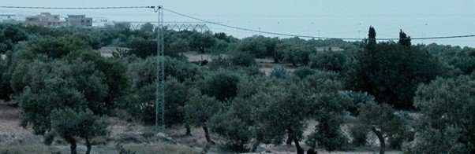
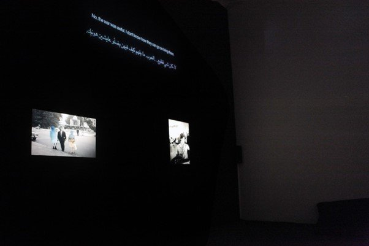
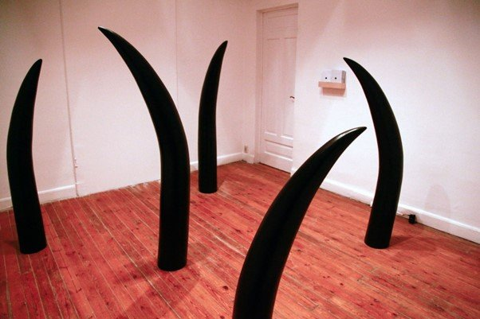

Originally published in Mada Masr on 14 December 2016
By Ismail Fayed

Maria Iorio/Raphaël Cuomo, The Interpreter, Video, 36min, Arabic with English subtitles, 2009
At first I don't recognize the claustrophobic feeling of things repeating themselves without the possibility of a different outcome, but it dominates most artworks in the Contemporary Image Collective's current exhibition. Evasive Routes: On restrictions of movement and forced displacement becomes a laborious realization of our dismal contemporary reality. I begin to feel completely powerless in face of the forces that imprison, displace or force thousands everyday to take to the sea, the desert or any other possible escape route. Because the works mostly accentuate an immersive claustrophobia, it becomes increasingly difficult to move from one work to another. Worn down, I feel less and less inclined to look any further.
But the five artworks do offer plenty to look at, and each presents an interesting relationship between the visual and the audible. Mirna Bamieh's projected video, a trail of bodies cut out of their context, moving diagonally across a white wall, unfolds to the sound of cheering and heartfelt calls, bringing to mind memories of similar sounds heard in Egypt over the past five years. By extracting the surroundings but keeping the audio of Palestinian refugees trying to cross over to the Golan Heights, This Mined Land of Ours (2012) allows us to imagine the possibility of moving across space when nothing stands in our way. This audio-visual tension can be seen further in the musings of two participants of the Take to the Sea collective (Footnotes on Migration) on their research on undocumented migrants, set against a double projection of their research footage and a pixelated sunset scene of children playing on a beach, mixing the sense of joy of new places with the weary acknowledgment of displacement. In other works the audio is semi-factual, as with the calm narration in Maria Iorio/Raphael Cuomo's film The Interpreter (2004-2009), which describes how people are smuggled from Tunisia via the Mediterranean.
Although all five works discuss the agonies of displacement and migration, Yasmine Eid-Sabbagh and Rozenn Quéré's multimedia installation Possible and Imagined Lives (2012) in particular stands out in its portrayal, because it is the most hopeful work. Its delightful audio narrations tell the imagined and real stories of four Palestinian-Lebanese sisters, three of whom were exiled to three different countries while one remained in Lebanon. Full of charm and irrepressible joie de vivre, they are told in French with a distinct Lebanese accent against a slide projection of a photo archive of the four sisters in Cairo, New York, Paris and Beirut. The women's resilience and wry humor can be seen as a means of resisting the tragedy of losing one's home and way of life.

Yasmine Eid-Sabbagh and Rozenn Quéré, Possible and Imagined Lives, 2012, multimedia installation
Amado Alfadni's installation Black Ivory (2016) also stands out in how sound plays simultaneously off an imagined space and a constructed space. Giant sculptures of elephant tusks, painted black, are distributed around the room to create a certain route. The voice of a man, speaking in the Shilluk language of South Sudan, creates a sense of incomprehensibility as one moves through the giant black tusks to get the stand where Arabic and English transcripts of the narrative are placed. It tells the story of slave routes of South Sudan during the time of Mohamed Ali. Trepidation fills the room as one reads and begins to understand that it speaks of young children kidnapped from South Sudan and sold in Cairo, a journey that involved incredible cruelty. Egypt and Egyptians rarely, if ever, speak of their involvement in the slave trade throughout the 19th century (technically it ended in 1877 when Ismail Pasha signed the Anglo-Egyptian Slave Trade Convention). Alfadni's installation is a much-needed reminder, but I couldn't immediately relate it to any other work in the exhibition. I could see echoes of these horrors in what Sudanese and Somali refugees now face in Egypt, but because there is no reference to the current reality of South Sudan, the connection to the rest of the artworks feels tenuous.

Amado Alfadni, Black Ivory, 2016, installation with painted elephant tusks
Evasive Routes is the third chapter of If Not for this Wall, following Greetings to those Who Asked About me (2015) and Chronic: On psychological exhaustion as a public state (2016). Greetings focused on imprisonment and Chronic focused on the anti-psychiatric movement and the public perception of madness and mental disease. Although all three question state institutions for limiting citizens' freedom and persecuting them for their political or ethical convictions, Evasive Routes pushes this theme in a slightly different direction — the crisis of mass displacement in our region and the injustices suffered by the Palestinian diaspora since the late 19th century.
Some works in the different exhibitions bear vague resemblance to each other. For example, Uriel Orlow's installation Unmade Film (2012-2014), exhibited as part of Chronic, and Eid-Sabbagh and Quéré's Possible and Imagined Lives, are markedly different conceptually and thematically, but they both dwell on the consequences of displacement and the aftermath of the loss of a homeland on both Palestinians and Israelis. Emma Wolukau-Wanambwa's Nice Time (2014), shown as part of Greetings, resonates with Alfadni's installation in its discussion of how colonial legacies are erased and rewritten, in the cases of Britain in Uganda and Egypt in South Sudan respectively. However, this particular exhibition acquires an immediate relevance because it implicates itself in an already raging debate on how displacement is fueling a political apocalypse in the West, with the rise of extreme right-wing politics prompting nations to shut down refugee camps and close borders in a paranoid xenophobia not seen since WWII. Walking around this exhibition is painful, considering this urgency and political dystopia.
While I don't believe that the task of resolving terrible tragedies such as displacement and closed borders should fall to artists, I would like to take from this exhibition a complexity of thinking, aesthetically mediated, that helps us imagine alternative ways of thinking about such realities. Over the following days, I contemplate the works again and again, searching for the possibility of imagination that could subtly undo the crippling effect of despair.
With the possible exception of the Take to the Sea voice-over, where the mention of a success story of a boy from Upper Egypt who made it to Italy gives a sense of the possibility for "life after tragedy," the only work in Evasive Routes that offers much in the way of imagining alternatives is Possible and Imagined Lives. These four women talking with lightheartedness about the miseries of war and displacement, managing to find hope and desire to continue with their lives, made me think that it would be an affront to the thousands who are currently being displaced to not imagine and share different, more hopeful futures. Such exercises of the imagination are not to undermine the current tragedy, but to reaffirm resistance, survival, life and the promise of opportunity and happiness.
There is a double bind in curating a show that is both timely and politically sensitive: In seeking to be true to the contingencies of your abysmal reality, you may end up only conveying the despair of the moment. Indeed, the general lack of hope is a serious drawback to the exhibition. It is precisely because these are such tragic times for so many people that we owe them the possibility of an alternative and the possibility of hope.